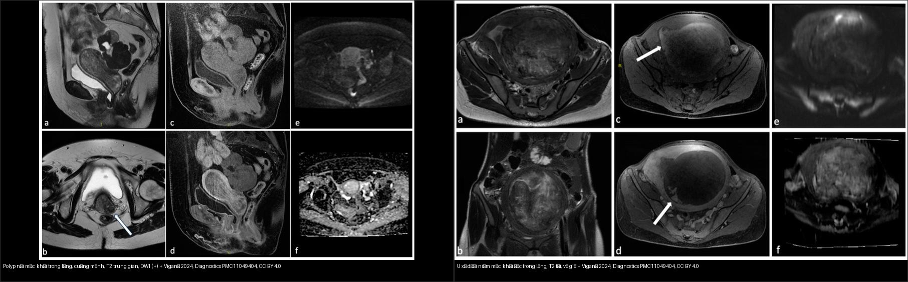
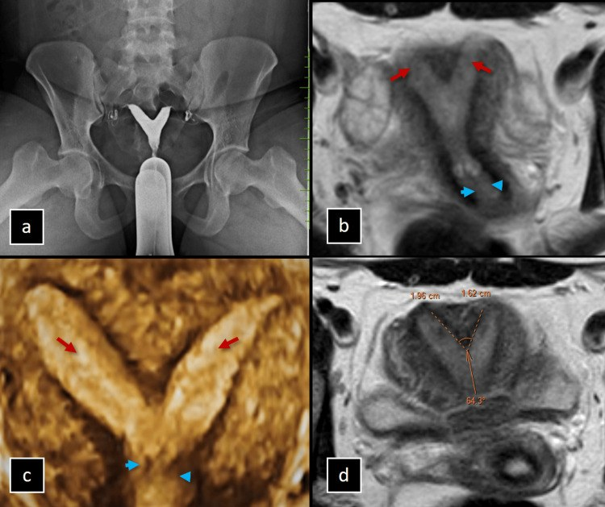
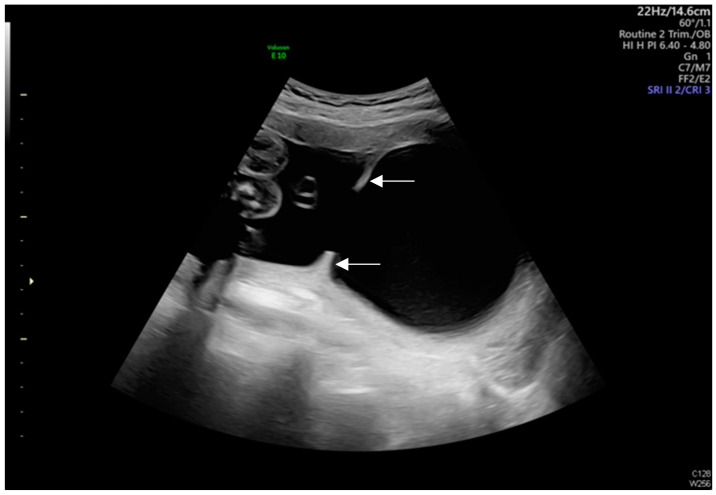
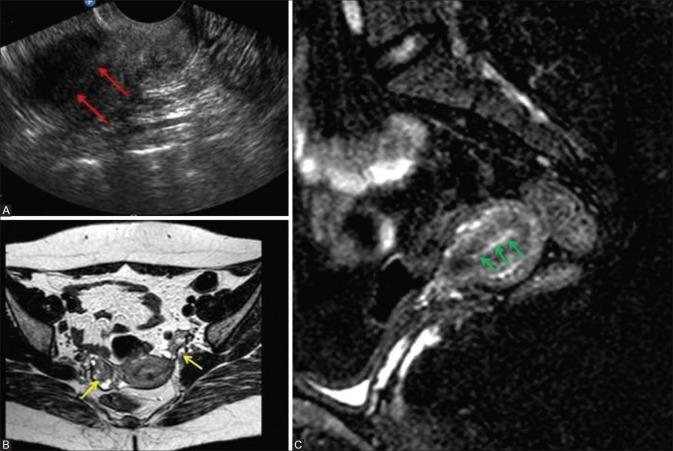
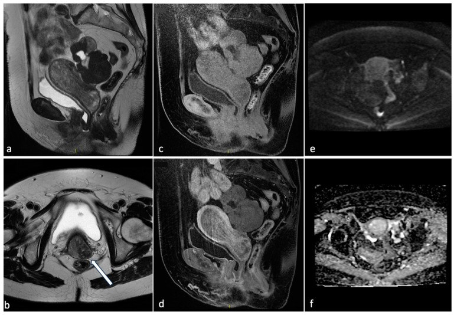
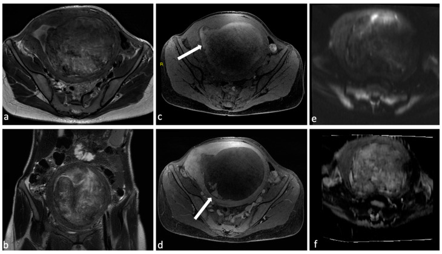

571 — Sẩy thai tái diễn: tiếp cận hình ảnh tử cung / Recurrent pregnancy loss: uterine imaging work-up
Tags: pattern:say-thai-tai-dien vung:tu-cung score:ESHRE-ESGE score:ASRM protocol:sonohysterography protocol:MRI-tu-cung
Mức chắc chắn (certainty): tổng hợp y văn (literature synthesis) — nhóm tự biên từ y văn mở (Insights into Imaging 2025, Indian J Radiol Imaging 2020, Diagnostics 2024, Human Reproduction Update 2025), số liệu định lượng lấy nguyên văn từ bài gốc.
1. Tổng quan — vì sao phải "soi" tử cung, và vì sao MRI/SIS thấy được bất thường
- Sẩy thai tái diễn (recurrent pregnancy loss, RPL): ≥ 2 lần sẩy thai liên tiếp (ESHRE 2023 & ASRM 2020; ngưỡng cũ ≥ 3). Nguyên nhân gồm di truyền, nội tiết, miễn dịch/đông máu, yếu tố tử cung (uterine factor) và cổ tử cung.
- TẦM QUAN TRỌNG của yếu tố tử cung: phần lớn là nguyên nhân SỬA ĐƯỢC bằng mổ nội soi (cắt vách, cắt polyp, cắt u xơ dưới niêm mạc, gỡ dính) → hình ảnh quyết định ai được mổ. Dị dạng ống Müller (MDA) chiếm 13,3–24,5% người sẩy thai tái diễn (so với 5,5% dân số và ~8% người vô sinh — Dixit 2025).
- TẠI SAO bất thường buồng tử cung gây sẩy: (a) vách ngăn là mô xơ–sợi ít mạch (poorly vascularized) — niêm mạc trên vách teo, phôi làm tổ thiếu nuôi dưỡng → sẩy/thai lưu sớm; (b) dính buồng tử cung (IUA/Asherman) làm mất niêm mạc chức năng → buồng teo, thể tích giảm; (c) u xơ dưới niêm mạc / polyp là "dị vật" trong lòng → cản trở làm tổ (kể cả polyp dưới 1 cm vẫn có thể ảnh hưởng — Grover 2020); (d) adenomyosis phá vỡ vùng chuyển tiếp và cửa sổ làm tổ.
- TẠI SAO MRI phân biệt được (vật lý tín hiệu):
- Vách xơ cho T2 tín hiệu thấp đều chen giữa hai buồng nội mạc sáng; quyết định mổ hay không là ĐƯỜNG VIỀN NGOÀI đáy tử cung (contour lồi = vách ngăn → mổ; lõm > 1 cm = hai sừng → không mổ).
- Asherman: mất dải tín hiệu T2 cao của nội mạc bình thường kèm tắc/nghẽn lòng — dải xơ tín hiệu thấp co kéo; dịch ứ một ổ tạo hình "giả nang" trong buồng.
- U xơ: khối đặc T2 rất tối, bờ rõ, vỏ giả (pseudocapsule); polyp: khối trong lòng T2 trung gian, thường DWI hạn chế nhẹ + ngấm thuốc, cuống mảnh.
- Adenomyosis: vùng chuyển tiếp (junctional zone, JZ) dày + nang nhỏ T2 sáng trong cơ.
- Ngưỡng định lượng (bắt buộc nhớ):
- Vách ngăn vs hai sừng (ASRM): lõm ngoài/đáy > 1 cm hoặc khoảng cách liên sừng > 4 cm → hai sừng (KHÔNG mổ); contour ngoài lồi + vách trong ≥ 1 cm + góc < 90° → vách ngăn (mổ cắt vách) (Grover 2020; xem thêm 528).
- Adenomyosis: JZ ≥ 12 mm (mốc dùng trong chẩn đoán MRI, xem 520).
- Tần suất dính buồng tử cung (IUA) sau can thiệp (Munro 2025, tổng quan hệ thống + meta): sau hút thai/sản phẩm thụ thai ở sẩy sớm ~17% (95% CI 11–25%); sau cắt u xơ qua nội soi ~16% (6–28%); sau cắt vách ngăn qua nội soi ~28% (13–46%). → chính thủ thuật điều trị cũng gây dính, cần phòng bằng gel/barrier.
- Cổ tử cung ngắn: TVUS cut-off 25 mm thường dùng định nghĩa cổ ngắn; ở 19 tuần mốc này ứng với bách phân vị thứ nhất và tỉ số khả năng (likelihood ratio) ~4,3 cho sinh non (Beaver 2024).
2. Mẫu hình + chẩn đoán phân biệt theo cơ chế & vị trí (Gamut)
- Nhóm bẩm sinh (MDA): vách ngăn (thường gặp nhất, liên quan sẩy nhiều nhất); hai sừng/đôi; một sừng; dị dạng cổ/âm đạo kèm theo (C/V) — xem 528/529.
- Nhóm mắc phải — trong lòng buồng: dính buồng tử cung (IUA/Asherman), polyp nội mạc, u xơ dưới niêm mạc (FIGO 0–2).
- Nhóm mắc phải — thành cơ: adenomyosis.
- Nhóm cổ tử cung: hở cổ tử cung (cervical insufficiency) — sẩy muộn quý II.
- Gợi nhớ theo bước chẩn đoán: Buồng tử cung có gì bất thường? (vách / dính / polyp / u xơ) → thành cơ? (adenomyosis) → cổ tử cung? (ngắn/hở). "Trong lòng = mổ nội soi được; thành cơ/cổ = hướng điều trị khác".
3. Bảng so sánh phân biệt (ma trận đối chiếu)
| Thực thể (entity) | Hình ảnh điển hình | Chốt vào (rule-in) | Chốt loại (rule-out) | Gợi ý xác nhận |
|---|---|---|---|---|
| Vách ngăn tử cung (septate) | Hai buồng nội mạc, vách T2 tối đều, contour ngoài LỒI | Contour ngoài lồi + vách ≥ 1 cm + góc < 90° | Lõm ngoài > 1 cm / liên sừng > 4 cm → hai sừng (không mổ) | Soi buồng cắt vách (metroplasty) |
| Dính buồng tử cung (IUA/Asherman) | Mất dải T2 cao của nội mạc + dải xơ co kéo + ổ dịch khu trú | Mất nội mạc T2 + tắc/nghẽn lòng + tiền sử nạo/hút | Nội mạc T2 liên tục bình thường → loại | Soi buồng là tiêu chuẩn vàng; SIS/HSG sàng lọc |
| Polyp nội mạc | Khối trong lòng, T2 trung gian, cuống mảnh, ngấm thuốc | Khối trong lòng có cuống + DWI (+) nhẹ | Khối T2 rất tối bờ rõ → u xơ | Soi buồng cắt polyp |
| U xơ dưới niêm mạc (FIGO 0–2) | Khối đặc T2 tối, bờ rõ, vỏ giả, đè đẩy nội mạc | Khối T2 tối bờ rõ + vỏ giả + đẩy lệch nội mạc | Khối T2 trung gian cuống mảnh → polyp | Soi buồng cắt u xơ |
| Adenomyosis | JZ dày ≥ 12 mm + nang nhỏ T2 sáng trong cơ, tử cung to đối xứng | JZ ≥ 12 mm + nang cơ + bờ nhập nhằng | Khối bờ rõ có vỏ giả → u xơ | MRI (T2W); điều trị nội khoa |
| Hở cổ tử cung (cervical insufficiency) | Cổ tử cung ngắn < 25 mm / phễu hóa trước 24 tuần | < 25 mm + tiền sử sẩy muộn quý II | Cổ bình thường → loại | TVUS nối tiếp; bán khâu/vòng nâng |

Trái: polyp nội mạc — khối trong lòng, T2 trung gian, cuống mảnh, DWI dương nhẹ. Phải: u xơ dưới niêm mạc — khối đặc T2 tối, bờ rõ, vỏ giả, đẩy lệch nội mạc. Nguồn: Viganò et al., Diagnostics 2024 Fig. 1 + Fig. 3 (PMC11049404), CC BY 4.0, ghép bằngtools/make_composite.py (letterbox, giữ aspect).
Vì sao cùng "khối trong lòng" mà điều trị khác nhau
- Polyp / u xơ dưới niêm mạc: cắt qua ngả soi buồng (hysteroscopic resection) — bảo tồn tử cung, cải thiện tỉ lệ làm tổ.
- Vách ngăn: cắt vách qua ngả soi buồng (metroplasty); hai sừng: KHÔNG mổ (tiên lượng sinh sản gần bình thường).
- Dính (Asherman): gỡ dính nội soi + phòng dính tái phát (gel hyaluronic/barrier, vòng đỡ); dính nặng tiên lượng xấu hơn.
4. Protocol chụp + hệ phân độ/điểm chuẩn hóa
- Đầu tay: siêu âm đầu dò âm đạo (TVUS) + siêu âm 3D tái tạo vành (3D-TVUS) — đánh giá hình thái tử cung và contour ngoài.
- Nghi tổn thương TRONG lòng (polyp/u xơ/dính): siêu âm bơm nước buồng tử cung (saline infusion sonohysterography, SIS) — hiển thị khuyết thiếu trong lòng tốt hơn TVUS thường quy; HSG cho hình khuyết thiếu nhưng không đánh giá được thành cơ.
- MRI tiểu khung khi: siêu âm không kết luận, MDA phức tạp, chuẩn bị mổ, hoặc nghi adenomyosis. Protocol T2W axial + coronal + sagittal (vuông góc trục thân tử cung để lộ contour ngoài) + T1W fat-sat khi nghi ứ máu; MRI cũng giúp phân biệt vách ngăn vs hai sừng và loại trừ nguyên nhân khác.
- Tiêu chuẩn vàng: soi buồng tử cung (hysteroscopy) cho tổn thương trong lòng và dính; vừa chẩn đoán vừa điều trị.
- Hệ phân độ: ESHRE/ESGE 2013 (U0–U6 + C/V) cho MDA; ASRM 2021 cho vách ngăn/hai sừng; phân loại AFS (American Fertility Society) cho dính buồng tử cung (mức độ nhẹ–trung bình–nặng theo tỉ lệ buồng bị dính).
flowchart TD
A["Say thai tai dien (>= 2 lan lien tiep)"] --> B["TVUS + 3D-TVUS: hinh thai tu cung + contour ngoai"]
B --> C{"Co bat thuong trong long buong?"}
C -->|"Hai buong + vach"| D{"Contour ngoai LOI hay LOM?"}
D -->|"Loi + vach >= 1 cm, goc < 90"| E["VACH NGAN: soi buong cat vach"]
D -->|"Lom > 1 cm / lien sung > 4 cm"| F["HAI SUNG: KHONG mo"]
C -->|"Khuyet thieu / mat noi mac T2"| G["SIS + soi buong: polyp / u xo duoi niem mac / dinh (Asherman)"]
G --> H{"Loai ton thuong?"}
H -->|"Polyp hoac u xo duoi niem mac"| I["Cat qua noi soi (bao ton tu cung)"]
H -->|"Dinh buong (IUA)"| J["Go dinh + phong dinh tai phat (gel/barrier)"]
C -->|"Khong bat thuong long"| K{"JZ >= 12 mm / tu cung to?"}
K -->|"Co"| L["Adenomyosis: dieu tri noi khoa"]
K -->|"Khong"| M{"Tien su say muon + co tu cung < 25 mm?"}
M -->|"Co"| N["Ho co tu cung: theo doi / ban khau"]

*Nữ 26 tuổi sẩy thai tái diễn: (a) HSG hai buồng; (b) MRI T2 vành hai buồng nội mạc (mũi tên đỏ) + cổ (xanh); (c) 3D-US; (d) đo góc vách 64,3°, lõm trong 1,96/1,62 cm → vách ngăn (ASRM không xác định nếu lõm ≥ 1 cm nhưng góc ≥ 90°). Nguồn: Ramakrishnan et al., Cureus 2024 Fig. 3 (PMC11526810), CC BY 4.0.*
Dính buồng tử cung tạo vách/dải xơ bám vào thành trước và thành sau lòng tử cung (mũi tên trắng) — hình ảnh gợi ý Asherman khi kèm tiền sử nạo hút. Nguồn: Huang et al., Diagnostics 2024 Fig. 3 (PMC11674699), CC BY 4.0.5. Biến thể bình thường và cạm bẫy
- Sóng co cơ tử cung trên T2 tạo dải tín hiệu thấp thoáng qua giả "vách ngăn"/giả dính → chụp lại sau vài phút; đừng vội chốt.
- Tử cung hình cung (arcuate) lõm trong < 1 cm = biến thể → không mổ (đừng gọi vách ngăn).
- Vách ngăn vs hai sừng = mổ hay không mổ: chỉ contour ngoài trên mặt cắt vành mới chốt; HSG/axial đơn thuần không loại trừ được hai sừng → nguy cơ mổ oan.
- Polyp nhỏ/cuống mảnh dễ lẫn với dính hoặc nếp niêm mạc trên TVUS → cần SIS hoặc soi buồng; polyp < 1 cm vẫn có thể cản trở làm tổ.
- Bỏ sót IUA sau hút thai: bệnh nhân sẩy lặp lại + nạo/hút nhiều lần → luôn nghĩ Asherman (mất nội mạc T2), tránh chỉ loạn nội tiết.
- Đừng quên nguyên nhân ngoài tử cung: nếu buồng tử cung bình thường, phải sàng lọc tiếp yếu tố miễn dịch/đông máu, nội tiết, nhiễm sắc thể — hình ảnh tử cung chỉ loại trừ MỘT nhóm nguyên nhân.
6. Tự lượng giá — Blind Quiz
Ca 1 — Nữ 26 tuổi sẩy 3 lần liên tiếp, HSG hai buồng. Đọc ảnh trước.
- Gợi ý lâm sàng (clinical context): sẩy thai tái diễn, HSG cho hai buồng, chưa rõ vách ngăn hay hai sừng.
- Câu hỏi: Contour ngoài đáy tử cung lồi hay lõm? Xử trí mổ hay không mổ? Vì sao?
Bấm để hiện đáp án (findings + chẩn đoán)
- Dấu hiệu (findings): MRI T2 vành + 3D-US cho hai buồng nội mạc với vách trong; đo góc vách 64,3°, lõm trong 1,96/1,62 cm, contour ngoài lồi.
- Chẩn đoán (diagnosis): vách ngăn tử cung — vì contour ngoài lồi + lõm trong ≥ 1 cm; xử trí soi buồng cắt vách (khác hai sừng: không mổ).
- Nguồn ảnh: Ramakrishnan et al., Cureus 2024 Fig. 3 (PMC11526810), CC BY 4.0.
Ca 2 — Nữ 32 tuổi sẩy 2 lần; tiền sử nạo hút 2 lần, kinh ít. Đọc ảnh trước.

- Gợi ý lâm sàng: sẩy tái diễn, nạo/hút nhiều lần, kinh nguyệt rất ít.
- Câu hỏi: Nội mạc T2 còn dải sáng liên tục không? Chẩn đoán? Tiêu chuẩn vàng để xác nhận?
Bấm để hiện đáp án (findings + chẩn đoán)
- Dấu hiệu: (A) siêu âm mất echo nội mạc (mũi tên đỏ); (B,C) MRI — nội mạc mỏng/không đều, dải xơ co kéo (mũi tên vàng/xanh) → mất niêm mạc chức năng + buồng biến dạng.
- Chẩn đoán: dính buồng tử cung (Asherman) — nghĩ do tổn thương nội mạc sau nạo hút. Tiêu chuẩn vàng: soi buồng; xử trí gỡ dính + phòng dính tái phát.
- Nguồn ảnh: Grover et al., Indian J Radiol Imaging 2020 Fig. 15 (PMC7240899), CC BY-NC-SA 4.0 (nguyên bản, không ghép).
Ca 3 — Nữ 35 tuổi rong kinh + sẩy 2 lần; MRI thấy khối trong lòng tử cung. Đọc ảnh trước. (ca nguyên văn: bệnh nhân 76 tuổi — xem phản biện)

- Gợi ý lâm sàng (nguyên văn): bệnh nhân 76 tuổi, chảy máu sau mãn kinh; MRI có khối lớn trong lòng tử cung.
- Câu hỏi: Khối đặc hay nang? Tín hiệu T2? DWI/ADC ra sao? 3 phân biệt + ý nghĩa lâm sàng?
Bấm để hiện đáp án (findings + chẩn đoán)
- Dấu hiệu: (a,b) T2 — khối tín hiệu trung gian lấp buồng tử cung, bờ tương đối rõ; (c) CUBE; (d) sau tiêm ngấm thuốc; (e,f) DWI/ADC hạn chế nhẹ → polyp nội mạc lớn.
- Chẩn đoán: polyp nội mạc — vì khối trong lòng, T2 trung gian, cuống/ngấm thuốc; phản biện: ca gốc ở phụ nữ sau mãn kinh (chảy máu sau mãn kinh) — polyp có nguy cơ ác tính tăng theo tuổi mãn kinh và AUB → phải sinh thiết/loại trừ ung thư, khác bối cảnh sẩy thai ở người trẻ. Không sửa nguồn, chỉ chú thích phản biện.
- Nguồn ảnh: Viganò et al., Diagnostics 2024 Fig. 1 (PMC11049404), CC BY 4.0.
Ca 4 — Nữ 34 tuổi sẩy 3 lần; MRI thấy khối đặc trong lòng đè lệch nội mạc. Đọc ảnh trước.

- Gợi ý lâm sàng: sẩy tái diễn + rong kinh; MRI khối đặc trong/áp thành tử cung.
- Câu hỏi: Đây là polyp hay u xơ? Dấu hiệu nào chốt? Xử trí?
Bấm để hiện đáp án (findings + chẩn đoán)
- Dấu hiệu: (a,b) T2 vành/axial khối đặc, T2 tối, bờ rõ, vỏ giả, đẩy lệch nội mạc; (e,f) DWI/ADC không hạn chế kiểu polyp nhỏ.
- Chẩn đoán: u xơ dưới niêm mạc (leiomyoma, FIGO 0–2) — vì khối T2 tối bờ rõ vỏ giả (khác polyp T2 trung gian). Xử trí cắt qua ngả soi buồng (bảo tồn tử cung).
- Nguồn ảnh: Viganò et al., Diagnostics 2024 Fig. 3 (PMC11049404), CC BY 4.0.
Ca 5 — Phân tích ảnh ghép dưới đây: hai "khối trong lòng" khác nhau ở đâu? (Bảng mục 3.)
Bấm để hiện đáp án
- Trái: polyp — T2 trung gian, cuống mảnh, DWI (+) nhẹ.
- Phải: u xơ dưới niêm mạc — T2 tối, bờ rõ, vỏ giả; cả hai đều cắt qua ngả soi buồng để bảo tồn tử cung.
- Nguồn: PMC11049404 Fig. 1 + Fig. 3, CC BY 4.0 (ảnh ghép letterbox).
Bài liên quan chéo
- 500 – Tổng quan Vú & Sản Phụ khoa
- 520 – Tử cung: xơ FIGO, adenomyosis, dày nội mạc
- 528 – Dị dạng tử cung bẩm sinh: vách ngăn vs hai sừng
- 529 – Cổ tử cung & âm đạo bẩm sinh: dị dạng tắc nghẽn
- 550 – Thai sớm & thai ngoài tử cung
- 565 – Sàng lọc hình thái thai & Doppler sản khoa
Ảnh
- Tên file:
571_slug_Modality_SourceID.jpg. Nguồn + giấy phép từng ảnh trongimages/CREDITS.md. - AuntMinnie (https://www.auntminnie.com): paywall — chỉ dẫn link, không tải.
Không dùng để chẩn đoán độc lập khi chưa có người hướng dẫn.